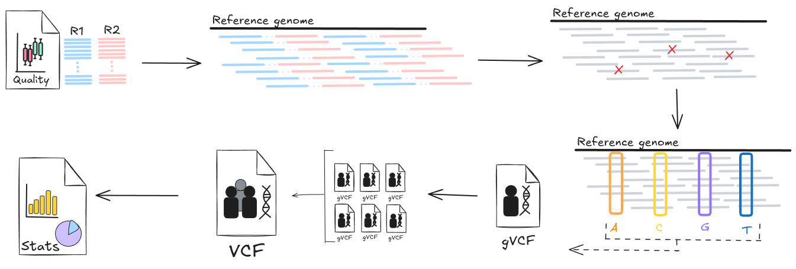
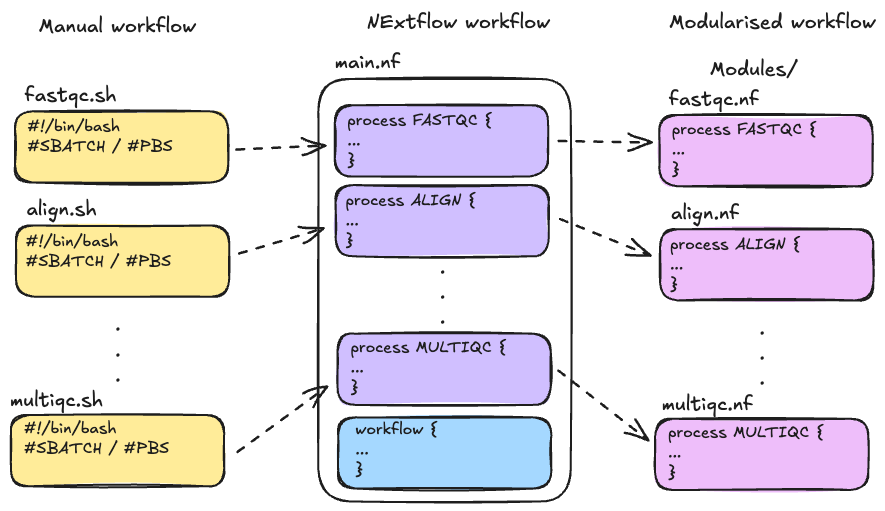

2.0 Introduction
Learning objectives
- Recall the overall structure of a modular Nextflow pipeline, including the roles of
main.nf,modules/, and configuration files - Recognise the importance of separating workflow logic from system-specific configuration for portability and reproducibility
- Identify which parts of the pipeline need to be adapted when moving between systems (e.g. from local to HPC)
2.0.1 Log back in to your assigned HPC
Reconnect to your HPC through VSCode, the same way we did in Part 1.
Log in to your assigned HPC with the user account and password provided to you on day 1:
Note
Be sure substitute your assigned user name for <username> in the above code example.
Navigate to the scratch space for the workshop project, then open your cloned part2 repository. Note that $USER is an environment variable that automatically expands to your username, so you do not need to replace this with your training username.
2.0.2 Configuring a custom pipeline
Part 2 of this workshop builds on the foundational HPC and Nextflow configuration concepts introduced in Part 1. We will now apply these concepts to configure a custom variant calling pipeline for efficient execution on HPC systems.
To keep the focus on configuration, the pipeline code and logic are provided for you and we will not be reviewing the contents of input and output files in detail, beyond configuration needs.
Learn to build custom Nextflow workflows
See our Nextflow For the Life Sciences materials for an introduction to building Nextflow workflows. This workshop expands on Nextflow for the Life Sciences.
We’ll begin by getting the pipeline running on the HPC, then progressively explore how to benchmark performance, understand HPC-specific constraints, and implement optimisations to improve efficiency and resource use.
Throughout this section, we’ll continue using the variant calling example to deepen your understanding of the key decisions involved in tuning pipelines for the specific HPC infrastructure you work on.
We will be using small data sets!
In this section, we will continue using the small paired-end reads from Part 1 to demonstrate key concepts related to running and configuring workflows on HPC systems.
Because the data is deliberately small, the processes will run quickly and with minimal resource requirements. This helps illustrate how the workflow behaves, but it also means that:
- Some resource-related errors (e.g. out-of-memory, walltime exceeded) will not occur, even if your configuration is suboptimal.
- Performance trade-offs (e.g. with different
cpusormemorysettings) may be less noticeable than with real-world data. - HPC scheduling behaviour may differ slightly - smaller jobs are often scheduled more quickly and occupy less system space.
When running real data sets on HPC systems, you may encounter different behaviours, longer runtimes, and additional errors. During Part 2 you will gain practice in identifying and debugging workflow errors, to build the skills you will need to run your own data analyses with Nextflow on HPC.
2.0.3 Why do you need custom pipelines?
There are several reasons why you might need to develop or adapt your own Nextflow pipeline:
- Tailored to your specific needs: custom pipelines give you full control over input/output formats, tool parameters, workflow logic, and configuration options.
- Gaps in available pipelienes: existing pipelines (e.g. nf-core) may not cover your use case, or a relevant pipeline may not exist at all.
- Resource optimisation: nf-core pipelines are generalised by design and may be over-provisioned or misconfigured for your HPC environment. Although easier to get running out-of-the box, this could lead to inefficient use of HPC resources or being charged excess service units (SUs)!
2.0.3 The scenario: variant calling on HPC
Our use case for today is taking raw DNA sequence data from a number of human patients and using a series of data processing steps to obtain a final results file containing genetic variants for each patient.
Remember, it does not matter if you are unfamiliar with the biology or the tools used; the focus is on learning how to efficiently run Nextflow pipelines on HPC.
We start with an unoptimised and minimally configured pipeline (like something that was developed and run on a laptop), and run through the entire workflow on a single sample. We will then explore optimisation strategies, implement them, and finally scale up the workflow to handle multiple samples efficiently.
The diagram below shows a high level overview of the workflow we will be creating, starting with the raw data for each patient, mapping it against a human reference genome file, and then identifying and summarising the genetic variants found in the input data.

2.0.4 The pipeline file anatomy
This pipeline builds on the structure introduced in our introductory Nextflow for the life sciences workshop, where the workflow is separated into the data processing logic, and system-specific configuration. This layout helps keep things reproducible, easy to maintain, and simple to adapt across different environments - like moving from your laptop to an HPC!
Recall the demo Nextflow workflow we explored in lesson 1.5.2. Our custom workflow will extend on this by introducing some new features that help us stay organised. This includes:
config/to house our custom configuration filesmodules/to house our process files as.nffiles
At a glance:
# (some folders are truncated)
.
├── conf # System-specific configuration files
│ ├── pbspro.config
│ └── slurm.config
├── main.nf # Main workflow structure
├── modules # Individual process modules
│ ├── align_chunk.nf
│ ├── align.nf
│ ├── fastqc.nf
│ ├── genotype.nf
│ └── ...
├── nextflow.config # Base parameters and profile defs
├── samplesheet_full.csv
├── samplesheet_single.csv
└── ...
Consider a basic Nextflow run command with this structure, where a user needs to specify some parameters and (optionally) a configuration file:
main.nfis the executable file that identifies the workflow structure, inputs, and processes that are pulled frommodules/--parameterflag matches a parameter initialised in thenextflow.configand applies to the workflow execution-profileflag is used to specify custom configuration details for our specific environments, but it can also apply to other customisations

In part 2, we will only edit the module files only if it involves optimising the workflow performance. The majority of exercises will focus on configuring how and where these steps run on HPCs, using separate config files. This separation makes it easy to test a pipeline locally and later scale it up on a system like Gadi or Setonix, without rewriting processes.
Why modules?
Nextflow pipelines are often set up using modules, which help keep things clean and organised. The key idea is that some files can stay the same no matter where you run them, while others are easily tweaked to match the system you're using. This is especially useful when you're testing a pipeline locally first, then moving to run it on an HPC - something many researchers do.

If everything were hardcoded, you'd end up changing lots of lines across multiple files, which can quickly get messy and error-prone. By using modules, you only need to configure how and where things run, without rewriting the pipeline a itself. It also makes it easier to reuse parts of a pipeline or swap out tools later on, without starting from scratch.
For more information, see "What's in modules/".
2.0.4.1 main.nf and modules/
Let's take a look at our custom pipeline's main.nf to see how we have structured our variant calling workflow:
include { FASTQC } from './modules/fastqc'
include { ALIGN } from './modules/align'
include { GENOTYPE } from './modules/genotype'
include { JOINT_GENOTYPE } from './modules/joint_genotype'
include { STATS } from './modules/stats'
include { MULTIQC } from './modules/multiqc'
// Define the workflow
workflow {
// Define the fastqc input channel
reads = Channel.fromPath(params.samplesheet)
.splitCsv(header: true)
.map { row -> {
// def strandedness = row.strandedness ? row.strandedness : 'auto'
[ row.sample, file(row.fastq_1), file(row.fastq_2) ]
}}
bwa_index = Channel.fromPath(params.bwa_index)
.map { idx -> [ params.bwa_index_name, idx ] }
.first()
ref = Channel.of( [ file(params.ref_fasta), file(params.ref_fai), file(params.ref_dict) ] ).first()
// Run the fastqc step with the reads_in channel
FASTQC(reads)
// Run the align step with the reads_in channel and the genome reference
ALIGN(reads, bwa_index)
// Run genotyping with aligned bam and genome reference
GENOTYPE(ALIGN.out.aligned_bam, ref)
// Gather gvcfs and run joint genotyping
all_gvcfs = GENOTYPE.out.gvcf
.map { _sample_id, gvcf, gvcf_idx -> [ params.cohort_name, gvcf, gvcf_idx ] }
.groupTuple()
JOINT_GENOTYPE(all_gvcfs, ref)
// Get VCF stats
STATS(JOINT_GENOTYPE.out.vcf)
// Collect summary data for MultiQC
multiqc_in = FASTQC.out.qc_out
.mix(STATS.out.stats_out)
.collect()
/*
* Generate the analysis report with the
* outputs from fastqc and bcftools stats
*/
MULTIQC(multiqc_in)
}
We have used:
include { process } from './modules/process-name'to pull in processes frommodules/- Input channels (e.g.
reads,bwa_index,ref) to define how data moves between processes - Channel operators (e.g.
.map(),.groupTuple(),.mix(),.collect()) to transform and combine data streams dynamically - Parameterised inputs (e.g.
params.ref_fasta,params.samplesheet) so the workflow can be reused on different datasets without having to edit the code
This structure makes it easier to swap in alternative tools and processes, especially later when working with scatter-gather patterns without cluttering main.nf or compromising reproducibility.
2.0.4.2 nextflow.config and config/
Let's take a look at our custom pipeline's nextflow.config to see how we are configuring the workflow execution:
// Define params
params {
samplesheet = "$projectDir/samplesheet_single.csv"
ref_prefix = "$projectDir/../data/ref/Hg38.subsetchr20-22"
ref_fasta = "${params.ref_prefix}.fasta"
ref_fai = "${params.ref_prefix}.fasta.fai"
ref_dict = "${params.ref_prefix}.dict"
bwa_index = "$projectDir/../data/ref"
bwa_index_name = "Hg38.subsetchr20-22.fasta"
cohort_name = "cohort"
outdir = "results"
}
// Define HPC profiles to run with job scheduler
profiles {
// Use this profile to interact with the scheduler on setonix
slurm { includeConfig "config/slurm.config" }
// Use this profile to interact with the scheduler on gadi
pbspro { includeConfig "config/pbspro.config" }
}
We have used:
params {...}blocks to centralise all user-controlled parametersprofiles {...}for profile definitions to enable us to run different configurationsincludeConfig "conf/name.config"directives to pull in separate configuration files fromconf/
Nextflow’s configuration files define how and where each process runs, including what resources to request, which job scheduler to use, and how to execute software.
In the context of HPCs, this means specifying:
- How many CPUs, memory, and time a process should use
- The appropriate executor (e.g. PBS Pro on Gadi or Slurm on Setonix)
- The default queue/partition and optional account/project codes
- Whether and how to use Singularity containers
These settings are defined in the main nextflow.config, and extended using config profiles. This separation will allow us to run the same pipeline across different HPCs just by switching profiles, without modifying the core workflow. We will build our system-specific configuration files in conf/ in the next lesson:
Configuration imagination
While we are using custom configs to allow us to make our pipeline "portable" so it can run on NCI Gadi and Pawsey Setonix HPCs, you can also use custom configurations to tailor your pipeline to many other scenarios. For example:
- Different datasets requiring more/less memory
- Testing vs production runs
2.0.5 Summary
This section introduced the basic structure of the custom variant calling Nextflow pipeline for the remainder of Part 2, emphasising the separation between workflow logic (main.nf, modules/) and system-specific configuration (nextflow.config, conf/). We reviewed how this separation supports portability, reproducibility, and ease of adaptation across environments, such as when transitioning from local testing to running on HPC systems like Gadi (PBS Pro) and Setonix (Slurm).